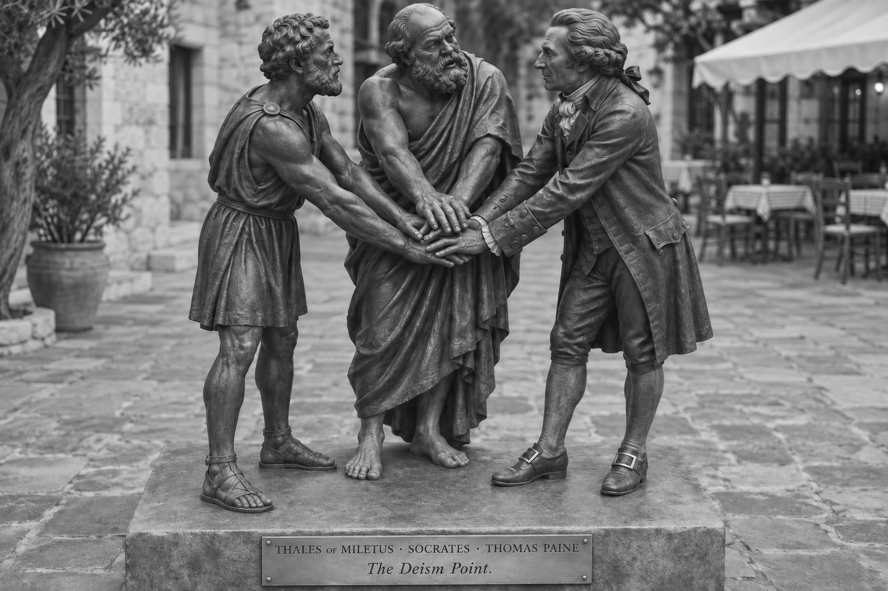

Chapter 1 · Arrival
The van stopped where the asphalt stopped.
Rachel Weiss had expected a wall or a gate. Instead there was a long, low parking lot, and beyond it a street with no cars on it at all. The driver, a heavy man from Chalandri, a demos bordering Neo Psychico, who had talked the whole way from the airport, switched off the engine and folded his arms.
"This is as far as I go," he said. "From here, you walk. Or you take their bus."
"Their bus," said Marcus Bell, as if testing the phrase for an audience.
"Little bus. Comes every few minutes. You wave, it stops. You say where, it stops there." The driver shrugged. "No ticket. Nothing. It's a madhouse."
The radio was still murmuring on the dashboard. It had been murmuring since the airport, and for forty minutes it had talked about almost nothing else. A minister in Athens, promising that the Constitution would be "respected in every community, including that one". A bishop, promising the opposite. A professor from Thessaloniki calling prosopocracy "the most dangerous idea in Europe since 1789", and meaning it as praise. Then the international bulletin, read by a woman with a tired voice: a government in the Gulf had recalled its ambassador from Athens; a council of clerics elsewhere had declared the "Greek abomination" a threat to God and promised that it would not be allowed to stand; in the capital of a one-party state that the woman did not name, three students had been arrested for writing a single word on a wall.
"Which word?" said Tom Kowalski.
The driver turned off the radio. "Which word do you think?"
"You don't like Neo Psychiko," Rachel said.
The driver thought about it longer than she expected. "My wife eats in Neo Psychiko every Sunday," he said at last. "Pays in euros — the same prices as everyone. She says the food is better than ours." He looked out at the empty street. "My cousin works in Shanghai. He cannot type the name of this place on his phone. It disappears. Some days he cannot type 'Greece'. Some days the whole country is gone from his internet." He shook his head slowly. "So I think: what kind of place makes a billion people lose a word? And my wife says: a place where the food is good." He unlocked the doors. "I don't like it. But I drive here three times a week."
*
The visitors' office was a white hall at the edge of the parking lot, with a long table and a young woman behind it who could not have been more than twenty. A card on the table gave her name and number: Χρύσα · Chrysa, 04217-20060312-F-04.
"Press," she said, looking at their passes. "You have an office on Kifisias Avenue — one of the old banks. The keys are inside. You are the three hundred and twelfth news team to open an office here. The Japanese came yesterday. Al Jazeera has two." She almost smiled. "Legally speaking, you are professional visitors." She slid four sheets of paper across the table. "Please read these now. I'm required to watch you read them."
Tom, who was twenty-six and had never been required to do anything, read his twice.
The rules took up one side of the page. Faces and hair uncovered, except by a hat. Swimming in the pools: in a swimsuit, not in clothes. No religious dress or symbols of any kind. No public prayer. No weapons. No pornography. Speeches only in the speech stadium. At the bottom, in bold: Visitors who break any law are expelled.
"Any law," Marcus said. "Jaywalking?"
"There are no cars," said Chrysa. "You cannot jaywalk."
Daniela Ortiz had stopped reading. She was looking at the small gold cross at her throat, which her grandmother had given her in Queens when she was nine, and which she had stopped noticing years ago.
Chrysa saw her looking. Her voice did not change. "We have a safe," she said. "You can leave it here and collect it when you go. Or you can wear it inside your shirt, where it is yours and not a sign to anyone. Many visitors do that."
"And if someone sees it?"
"Then it is a sign."
Daniela was quiet for a moment. Then she slipped the cross inside her collar, where it lay cold against her skin.
"Thank you," said Chrysa, and meant it, Rachel thought — as if Daniela had done her a kindness rather than the other way around. Then she had the four of them stand, one by one, against the white wall, photographed each of them, and printed their IDs: first name in Greek and Latin, a number, and beneath it the word ΕΠΑΓΓΕΛΜΑΤΙΑΣ ΕΠΙΣΚΕΠΤΗΣ · PROFESSIONAL VISITOR.
Rachel turned hers over in her fingers. Ρέιτσελ · Rachel. No surname.
"Where's my last name?"
"For official business," said Chrysa. "This is not official business. This is living." She handed Marcus his. "You must carry it. You don't have to wear it. Face recognition software is not allowed in public here."
Then she asked for their mobile numbers. "Every visitor gives one," she said. "Nobody will call you. The system writes to you." Rachel typed hers into the screen on the table; so did the others.
She pushed one more sheet across the table, smaller, printed in a dozen languages. "If you want to understand what you are filming, the Prosopocracy School has seminars every day, for anyone who is interested. English at ten and at six. Arabic, Chinese, Spanish, Russian, many others. Free." This time she did smile. "Most journalists come once. Then they come back without their cameras."
*
The bus was a small electric thing, white, with wide windows and room for perhaps twelve. The driver was a woman in her sixties with reading glasses pushed up into gray hair. Rachel waved; it stopped. She said "Sophia Square"; the driver nodded and pulled away without a word.
Neo Psychiko slid past them: low apartment buildings, balconies thick with plants, bitter orange trees along the sidewalks, children on bicycles in the middle of the road, where the cars used to be. An old man was sitting on a folding chair outside his building, reading a newspaper in the full width of the street, as though it were his. In a way it was — his to use, as it was everyone's. Rachel wrote that down.
"It's quiet," said Tom.
"It's Monday," said Marcus. "Everyone's at work."
"It's quiet," Tom said again, and Rachel understood what he meant. It was not the quiet of a place where nothing happened. Somewhere a saw was running, and someone was practicing scales on a trumpet, badly, and there were voices from the balconies. What was missing was the engine-roar underneath everything, the sound she had lived inside her whole life and had never heard until it stopped.
Something else was missing too, and it took her longer to see it. There were no billboards. No posters on the walls, no banners across the street, no shop signs shouting prices, no screen anywhere trying to sell her anything. The walls were just walls.
"No ads," she said.
"It's on the sheet," said Tom. "Physical advertising is prohibited. Online they can advertise what they like. Out here, nobody is allowed to solicit your business."
And Marcus was wrong about the other thing, too, though none of them noticed yet. It was half past eleven on a Monday morning, and the balconies were full.
*
Sophia Square had been Agia Sofia Square until two years ago. The church that had given it its name still stood on its north side, but it was a nursing home now. A plaque in Greek and English beside the door read: Repurposed by the agreement of the citizens of Neo Psychiko, 29 February 2024. Through the open doors Rachel could see beds where the pews had been, and an old woman in a cardigan doing a crossword under the dome.
Everything else in the square was open. Restaurants, cafés, an ice-cream bar with a line of children, a traditional café (kafeneio) where men in their seventies were playing tavli (backgammon) under an awning. On a screen outside the ice-cream bar, a document scrolled slowly past: CERTIFICATE OF DEFINITION · HC-2026-0045 · Quality of life is everyone being in a position to pursue their own self-actualization unhindered if they wish to. Beneath it, in red: Counterarguments welcome. Challenge it. Tables spilled out across the paving in every direction, and at the center of it all, on a plain stone base, stood three bronze figures.
Daniela had her camera up before Rachel had read the plaque.
Three men — one in a short ancient tunic, one barefoot and broad-faced, one in an eighteenth-century coat — stood in a close circle with their hands stacked at the center, one on top of another, all six of them, like a team before a game. The plaque read: THALES OF MILETUS · SOCRATES · THOMAS PAINE. The Deism Point.

"Thomas Paine," said Marcus. "Our Thomas Paine?"
"The Age of Reason," said Rachel. "He got run out of most of the English-speaking world for writing it."
"And here he gets a statue next to Socrates."
"Here he gets the middle of the square."
Marcus looked at the old church, then back at the statue, and Rachel watched him find his opening line. "In a town that has banned religion," he said, in his broadcast voice, "the only shrine is to reason."
"They haven't banned religion," said Tom, who had read his sheet twice. "That statue is their religion. Deism. What they've banned is dogma — pseudo-religion."
Marcus waved this away. "Nobody in New York is going to hear the difference."
They were not the only ones filming. A crew from Brazilian television had set up on the far side of the statue, the reporter rehearsing the same three sentences into the wind. Two young Koreans were taking turns photographing each other in front of the stacked hands, laughing. A German couple in matching rain jackets were reading the definition on the screen aloud to each other, word by word, as if it were a menu in a language they almost knew. Around and between them, the people of Neo Psychiko went on with their Monday — drinking coffee, arguing, reading — with the faint, practiced patience of people who have lived for two years inside the most photographed square on earth.
Daniela panned slowly across all of it. At the edge of her frame, under a bitter orange tree, a young man stood alone — not drinking, not talking, his face lit by his phone — watching a table of young people laughing on the far side of the square. He did not look up once. Tom found him days later, in the edit, and could not have said why he had kept the shot.
*
They ate at a restaurant called ΚΗΠΟΙ — Gardens, Daniela translated from her phone — because it was the first place with a free table. The table stood under a lemon tree that grew up through the middle of the terrace. The menu was long and had no prices on it. A woman in a white apron came out to them, dark-haired, quick, wiping her hands.
She glanced at the IDs the four of them wore — pinned to their chests, hanging from their necks. Visitors only had to carry them; newcomers always displayed them anyway. "You are the Americans," she said. It was not a question. "From the bank building."
"News travels," said Rachel.
"Everything is on record." The woman smiled. A badge on her apron read: Ευγενία · Eugenia, 02386-19810904-F-04. "I'm Eugenia. I cook. Today I also carry plates, because the boy who carries plates is sick, so the system sent me. What do you want to eat?"
"What's good?"
"Everything. That's the point." She considered them. "Lamb with lemon potatoes. Greens. Fava. I'll bring what's right."
"And the prices?" said Marcus.
"For you, the same as for everyone. It comes in euros at the end, by card or by phone. Nobody takes cash here — every payment in Neo Psychiko is digital. For us, it goes on our account." She tilted her head. "You pay with money. We pay with work. It is the same thing, but we can see it."
She went back inside. Marcus raised his eyebrows at Rachel. "Did a waitress just give us the thesis statement?"
"A cook," said Tom.
The food came, and it was very good — better than good; Daniela photographed every plate. When they had finished, Eugenia came back with a small scanner, the size of a phone, and held it to each of their IDs in turn: four soft beeps. Then the bill printed, on a small white slip with every item and its price, and at the bottom two lines in Greek and English: Prepared by: Ευγενία · Eugenia, 02386-19810904-F-04 (cook, service); Κατερίνα · Katerina, 07731-19920517-F-02 (kitchen). Inspected by FERC shift B, 26 October 2026. And under that: Served to: Ρέιτσελ · Rachel, Μάρκους · Marcus, Ντανιέλα · Daniela, Τομ · Tom — professional visitors, each name followed by the number from their ID.
"They sign the food," said Daniela.
"And they sign us," said Tom. He turned the slip around so they could all see it. "Look. Our names, our numbers. That's what the scanner was. She scanned us."
"Every sale has two ends," said Rachel, reading the sheet again. "Who sold and who bought. Both go on the record, the moment it happens. A waiter, a baker, a shop — whoever sells scans whoever buys. The accounting does itself."
"So nobody can sell what was never bought," said Tom, "and nobody can buy anything that isn't on the books."
"No cash," said Daniela. "No black market. No envelope under the plate."
"And none of it leaves Neo Psychiko," said Rachel. "That's on the sheet too. The demos has its own servers. The record, the accounts, the board, and the demos' only bank all run on them. Digital autonomy, they call it. Nobody outside can switch it off."
Their four phones buzzed at once. Rachel turned hers over. A short message, in Greek and English: ΚΗΠΟΙ · Gardens, 26 October 2026. Complaint or praise? Tell us. Under it was a short form: the food, the service, a box to write anything, and two buttons, Submit and Dismiss.
"That's why she wanted our numbers," said Tom. "It's on the sheet. After every sale, the same form. A meal, a loaf of bread, a haircut. You fill it in, or you dismiss it."
"Who reads them?" said Marcus.
"The people who made it. And the inspectors."
Daniela typed Praise: the lamb was the best I have ever eaten. and pressed Submit. Marcus pressed Dismiss, then looked at the empty screen for a moment, as if he had been rude to someone.
"They sign everything," said Rachel. "Every transaction, every person, every day. Anyone can look up anyone."
"That's terrifying," said Marcus, with satisfaction. That was a segment.
Tom was watching the next table, where a family of four had sat down — a big man with sawdust still in the hair of his forearms, a teenage girl arguing with him about something, a younger boy feeding bread to a cat under the table. Eugenia came out and kissed the big man on the top of the head, swatted the boy's hand away from the cat, and went back inside without breaking stride.
The children carried IDs too. Some wore them on cords around their necks. They were smaller than the adults' cards. Each had a name, a number, and a small QR code in the corner.
"The kids have their own?" said Tom.
"Everyone under seventeen," said Rachel, finding it on the sheet. "Their own ID, with the household's QR code on it. A child buys an ice cream, and it goes on the household's record."
"She works here," Tom said. "And her family eats here. Where she works."
"Nobody has kitchens," said Rachel. "It's on the sheet."
"I know it's on the sheet." Tom was still watching. "I mean — look at them."
Eugenia came back out with four small coffees they had not ordered and set them down. "The welcome coffee," she said. "Every visitor's first meal in Neo Psychiko ends with one. It is on the record, like everything — the demos pays for it." Before he could stop himself, Tom asked her whether it was strange, eating every day where she worked.
She laughed. "Nobody has to eat where they work. We eat anywhere we please — here, in Ephialtes Square — it was Plateia Eleftherias before; we renamed it for Ephialtes, son of Sophonides — wherever we like. Today my family came here. And the price is the same for everyone — for you, for them, for me. Working here gives me no discount." She shrugged. "Before, I had a kitchen at home. I cooked for four, every day. Then I washed the pots. Then I washed the clothes. Then I ironed them. Every evening, every Sunday, for nineteen years." She wiped her hands on her apron. "Now I cook four hours here, for everyone, and then I take off the apron and I am finished. No pots. No washing. No ironing."
She nodded toward the next table. "That time is mine now. Theirs too. Pavlos makes the chairs he wants to make. Helen has her music. Pantropos has the cat." She shrugged. "That is not strange. Strange was before."
Rachel looked. The girl had stopped arguing and was laughing at something. The big man was pretending to be offended. It was an ordinary family having an ordinary lunch. Tom saw a mother who would be finished with cooking at the end of her shift, and a father who had made chairs all morning because he wanted to, and two children with nothing waiting for them at home but their own time. Rachel saw only lunch.
*
The big man introduced himself on the way out, because Tom asked him what he did, and he answered by inviting them to come and see. Παύλος · Pavlos, 03119-19780222-M-04, carpenter. He walked them there himself, ten minutes through streets where the only traffic was bicycles and the little white buses, talking the whole way with his hands.
The carpenters' peripteron had been a car dealership once — Rachel could still see the ghost of a brand name above the great glass front. Now the showroom floor was a covered workshop the size of a soccer field, open on one side to a yard stacked with timber, and it smelled of resin and sawdust and coffee. There must have been eighty people working in it, and as many visitors watching. "Come at three in the morning," said Pavlos. "Same." Nobody seemed to be in charge of any of them.
"Who tells you what to make?" said Rachel.
Pavlos looked at her as if she had asked who told him what to dream. "Nobody. Some days the demos needs things — beds for the nursing home, benches for the speech stadium, a new floor for the school. Those go on the board, and whoever wants them takes them. The rest of the time" — he spread his arms — "we make what we want to make. And we create synergies — we watch each other, we learn from each other. That is the whole secret. You put fifty carpenters in one room, and in one year you have ideas that one carpenter alone does not have in his whole life."
He showed them what he was making: a rocking chair in olive wood, no screws, no glue, every joint cut so that it locked into the next. It had taken him four months. Beside it, a young woman was carving the arm of a chair she had designed herself, and an old man with one eye shut was showing her how to hold the chisel lower.
Along the edge of the workshop, behind a waist-high rope, visitors stood and watched — dozens of them, from everywhere, as if at a zoo or a cathedral. A school group from Lyon. Three Japanese architects with notebooks. A tall Nigerian man filming on his phone and murmuring a commentary in Yoruba. Nobody shooed them away. Some of the carpenters talked to them over the rope, explaining a joint, passing a piece of wood across to be felt.
"In the old days," said Pavlos, "I had a shop in Chalandri. Kitchens. Fitted kitchens, for rich people. Marble tops, Italian handles. Kitchens to feed fifty people, for families of three who ate out every night anyway." He laughed. "Twenty years I built kitchens for people who did not cook. Now there are no kitchens, and I make chairs. And today I finished at four. In the morning."
"At four in the morning," said Marcus.
"Four hours. Like everybody. Tomorrow I start at four. A different shift every day. And two weeks' vacation every year, like everybody." He picked up a plane and turned it over in his huge hands. "After that, it is my time. Sometimes I stay here, because I want to. Sometimes I go to the sea with Helen and Pantropos. Sometimes I sit in Sophia Square and do nothing at all, and nobody calls me lazy, because everybody knows I made something good this morning." He looked at Rachel. "You can put that on American television. A man who works four hours and is not ashamed."
"Why four?" said Rachel. "Why not six, or eight?"
"Because four is where the work is best," said Pavlos. "We measured it, here and in every peripteron. In four hours a carpenter makes his best joints. After that his hands are still working, but his head has gone home. Eight hours of a tired man give you less than four hours of a fresh one, and his mistakes cost more than his hours." He put the plane down. "And then there is the other pay."
"The other pay?"
"Psychological income. It comes in many forms. Sleep. My children, before they grow up. A chair that nobody ordered. The sea on a Tuesday. Learning something I was too tired to learn for twenty years. Nobody standing over me." He shrugged. "It does not go on the account. But everybody here is rich in it."
*
On the way back, in Sophia Square, Daniela turned her camera toward a young woman sitting alone at the foot of the Deism Point, and the young woman put up her hand, quickly, flat, the way people do when a ball is coming at their face.
"Please," she said in English. "Not my face."
Daniela lowered the camera at once. "I'm sorry. I didn't—"
"It's all right." The young woman was perhaps twenty-five, in a plain gray jacket, a visitor's ID tucked inside it so that only the cord showed. "You couldn't know. Where I come from, if my face is on your television next to this—" she nodded at the three bronze men — "then my family has a visit from people who are not polite. My brother, my mother. Maybe me, when I go home."
"Where do you come from?" said Rachel.
The young woman smiled. "From a country where it is a crime to say the name of this place. So I will not say the name of mine." She looked up at the stacked hands. "I booked my visit in March 2024, the first week the list opened. On a computer in a library, with a program my cousin gave me, so nobody could see. Two and a half years I waited. If I booked today, I would wait ten. I told my family I am going to a conference in Istanbul. I have forty-eight hours." She looked at her watch. "Thirty-one now. This morning I went to the seminar at the Prosopocracy School. There is one in my language. Twenty people in the room, from my country and the countries around it. Nobody said where they were from. Nobody had to."
"And is it what you expected?"
She thought about it for a long time. Around them the square went on — the tavli players, the children at the ice-cream bar, the Brazilian reporter still rehearsing his three sentences.
"I expected a revolution," she said. "Flags. Speeches. Soldiers." She shook her head. "It is people eating lunch. That is all. People eating lunch, in the middle of the day, and nobody is afraid of anybody." She stood up and pulled her jacket closed over the ID. "Do you know how far away that is, from where I live? You cannot measure it in kilometers."
She walked away across the square and was lost among the tables, and Daniela stood with her camera pointed at the ground for a long time.
*
That night, in the old bank building on Kifisias Avenue, Marcus put the world up on four screens.
Prosopocracy was everywhere. On one channel, a crowd in Santiago, Chile, carrying a banner that said PROSOPOCRACIA YA. On another, a spokesman for a coalition of governments — two of them Islamic republics, the rest one-party states — reading a statement that called Neo Psychiko "a cancer in the body of civilization" and warned Greece that it would "answer for every day this experiment is allowed to continue". On the third, a Greek admiral assuring viewers that the country's air defenses had been placed on alert "as a precaution". On the fourth, a café in Buenos Aires that had renamed itself Calle Homero Seis (Six Homer St.) and was serving, its owner insisted, nothing but lamb with lemon potatoes.
And at the bottom of the fourth screen, scrolling past in a thin red band, a line from a news agency in Seoul: Unconfirmed reports: two men executed in North Korean province after being overheard using the word "prosopocracy".
Nobody said anything for a while.
"Overheard," said Tom at last. "Not even written. Overheard."
Marcus's phone rang. It was New York. He listened, said "Uh-huh" four times, and hung up.
"They want the threat angle," he said. "Bombs, clerics, generals. 'Is it dangerous to be there.' That's the lead." He rubbed his eyes. "And the restaurant. They liked the bill with the names on it. They want more of that. 'Weird stuff.'"
"The chairs," said Tom. "The man who works four hours and isn't ashamed."
"That's not news," said Marcus. "That's lifestyle."
Daniela, who had said almost nothing since the square, spoke from the window without turning around. "A woman waited two and a half years to spend forty-eight hours here. That's not lifestyle."
Rachel opened a new notebook and wrote three lines on the first page.
No cars. No prices. No priests.
She looked at them for a while. Half the world wanted this place dead; the other half was naming its cafés after it. Two men in North Korea had died for saying its name. And at its center, as far as she could tell, there was nothing but a cook, a carpenter, and a rocking chair that had taken four months to make.
It made no sense. Something that ordinary did not frighten governments. Something that ordinary did not get people killed. Underneath, she wrote the question she had come to answer — the question every system on earth eventually answers, if you wait long enough and look hard enough:
Who is really in charge?
Outside, through the open window, someone was still practicing the trumpet. Rather better now.
Ramifications
The story shows a rule working. This part counts what it changes. The figures for New York City are real; where they are estimates, the note says so.
1. No cars, motorcycles, scooters or taxis
When the engines stop at the edge of the demos, a great deal stops with them.
- Air. No exhaust in the streets where people live, walk and eat.
- Climate. No gasoline or diesel burned in the streets: one of the largest sources of greenhouse gases in any city simply stops.
- Noise. The engine-roar under everything disappears. People hear each other again.
- Safety. No car or motorcycle crashes, nobody run over, no funerals after a Saturday night. Children ride bicycles in the middle of the road.
- Space. Every parking place and every lane becomes room for people: tables, trees, benches, play.
- Money. No car payments, fuel, insurance, repairs, parking or fines.
- Community. People who walk meet each other. A street without cars is a place to stay, not a place to pass through.
Scaled to New York City:
- New Yorkers own about 2.1 million passenger cars, and about 46% of households have at least one.
- Owning and running a new car costs on average $11,577 a year in the United States. At that rate, New York's cars cost their owners about $24 billion a year.
- In 2025 there were about 52,000 crashes in New York City, and about 30,000 people were injured in them.
- In 2025, 205 people were killed in traffic in the city; in 2024, 253. In one year (fiscal 2025), 27 of the dead were on motorcycles, and 60 on motorized two-wheelers of every kind.
- Passenger cars produced about 12.4 million metric tons of greenhouse gases in the city in one year, close to a quarter of all its emissions. All transport together produced about 30%.
- Fine particles from traffic cause about 320 early deaths and 870 hospital and emergency visits in the city every year.
- The city has about 3 million free parking places on its streets. A city plan to give a quarter of its street space back to people was described as reclaiming the area of 13 Central Parks.
What it costs. Deliveries, ambulances, fire engines and the old and disabled need another way to move: small electric buses, carts and service vehicles. Jobs in parking, car sales, car insurance and repair disappear. In prosopocracy that costs those people nothing: work is guaranteed, the income is the same for everyone, and each can move to the work they like most. And a large city cannot simply close its streets; it must build the buses first.
2. No cash, and two or more names on every receipt
- Every payment is digital, and every receipt carries two or more IDs: the seller's, and the buyer's — or every buyer's, when several people share the bill.
- No black market, no envelopes, no tax evasion, no money laundering: a sale that is not on the record did not happen.
- Nobody can be robbed of cash, and no shop keeps a till worth breaking into.
- The accounts of the whole demos keep themselves. No bookkeepers chasing receipts, no auditors guessing.
What it costs. Everyone must have an ID and a phone, and the system must never fail. That is why the demos runs its own servers.
3. The quality form after every sale
- After every sale the buyer may praise, complain, or dismiss. It takes ten seconds.
- The people who did the work hear at once what was good and what was not. The inspectors see where to look.
- Bad work cannot hide for years behind a brand or a slogan. Good work is noticed by name.
What it costs. Forms are easy to ignore, and easy to abuse. A complaint is a fact to check, not a verdict.
4. No physical advertising
- No billboards, posters, banners or shop signs shouting prices. The walls are walls again.
- Nobody is sold to against their will in the street. Children are not taught to want things on the way to school.
- Advertising stays possible online, where a person can choose to look or not.
What it costs. A new shop is harder to find. People must ask each other, or look online, which is exactly what the demos wants.
5. Fewer things made, less waste
Every car, motorcycle and scooter that is never built, every stove, washing machine, iron and ironing board that is never sold, every set of pots, pans, silverware and kitchen tools that one restaurant kitchen replaces for a whole street, is energy never used, metal never mined, plastic never made, and trash never thrown away.
- Climate. Greenhouse gases are emitted not only by what we use, but by everything that has to be made first: the steel, the plastic, the factory, the ship, the shop, the van, the dump at the end. Fewer things made means less of all of it.
- Electricity. One large restaurant kitchen cooks for hundreds with a fraction of the energy of hundreds of home stoves. One laundry runs full machines, not thousands of half-empty ones.
- Plastic. No takeout boxes for home cooking, no packaging for thousands of small appliances, no plastic bags of shopping carried home every day.
- Noise pollution. No engines, no horns, no alarms, no delivery mopeds.
- Light pollution. No lit billboards, no shop screens, no headlights. On a clear night the stars come back.
Scaled to New York City: more than three million households, each with its own stove, its own fridge, its own pots and pans, and for many their own washing machine, iron and car, each made, shipped, sold, replaced and thrown away every few years. Our figures for cars appear above; nobody has counted the rest, and that is part of the problem.
What it costs. The factories that made these things, and the shops that sold them, lose their customers. Outside prosopocracy that means lost jobs. Inside it, nobody works for money: work is guaranteed, the income is the same for everyone, and the people who made stoves can make what they like most.
The principle. Job creation that burdens the environment hinders quality of life. Job creation is beneficial only when it is aligned with quality of life.
6. Four hours of work
- Better work. Four fresh hours give more and better work than eight tired ones, and fewer costly mistakes.
- Psychological income. Sleep, children seen before they grow up, the sea on a Tuesday, learning something new, nobody standing over you. It goes on no account, and everyone is rich in it.
- More energy. People who are not exhausted have energy left for their families, their friends, and the city.
- The same for everyone. The janitor, the surgeon and the astronaut have the same biological needs, and the demos meets them the same: shelter, food, clothing, medical care, education. What differs between them is not need but what each pursues beyond it, toward the top of their own pyramid. Nobody becomes a doctor for money; whoever would have, does something else.
- Better ideas and synergies. Fifty people of one trade in one peripteron, rested, watching and learning from each other, produce ideas that one tired person alone never would.
What it costs. More people are needed to cover every hour of a hospital or a bakery, and the shifts move every day, which some bodies find hard (see Chapter 25).
Sources: NYC car ownership, US Census data via Streetsblog NYC (2021); AAA, Your Driving Costs (2025); NYC Department of Transportation (traffic deaths, 2024–2025); NYC Mayor's Management Report, Vision Zero (fiscal 2025, motorcycle deaths); NYPD crash and injury data via CrashMapper (2025, preliminary); NYC Mayor's Office of Sustainability, Inventory of New York City Greenhouse Gas Emissions (emission year 2016); NYC Department of Health, The public health impacts of PM2.5 from traffic air pollution; NYC "25x25" street-space plan, via Planetizen (2022). The $24 billion figure is our estimate: 2.1 million cars × the AAA national average for a new car. Older cars cost less to own; insurance in New York costs more.